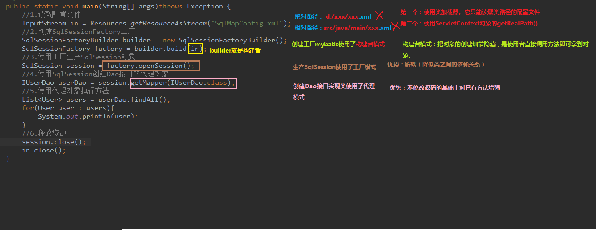
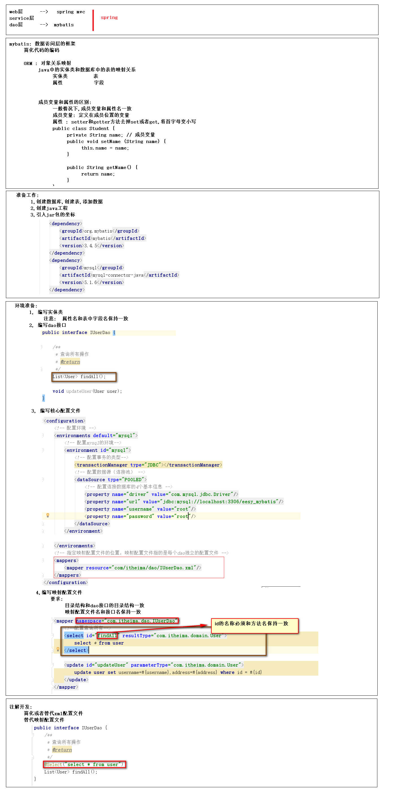
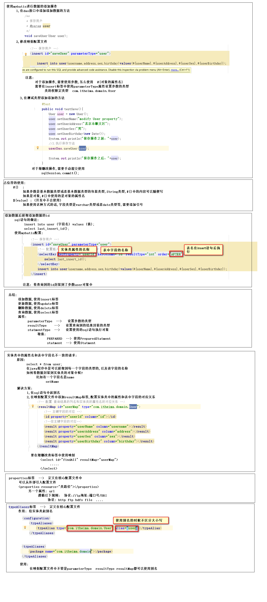

一、什么是框架
- 概念
- 框架是整个或部分系统的可重用设计，表现为一组抽象构件及构件实例间交互的方法；
- 框架是可被应用开发者定制的应用骨架。前者是从应用方面而后者是从目的方面给出的定义
- 框架其实就是某种应用的半成品，就是一组组件，供你选用完成你自己的系统

二、MyBatis框架
- 概念
- mybatis是一个优秀的基于 java 的持久层框架，它内部封装了 jdbc，使开发者只需要关注 sql 语句本身，
- mybatis通过 xml 或注解的方式将要执行的各种statement配置起来，并通过java对象和statement 中sql 的动态参数进行映射生成最终执行的 sql 语句，最后由 mybatis 框架执行 sql 并将结果映射为 java 对象并返回。
- 采用 ORM 思想解决了实体和数据库映射的问题，对 jdbc进行了封装，屏蔽了 jdbc api 底层访问细节（ORM就是Object Relational Mapping:对象关系映射）
- 实体类的属性和数据库表中的 字段保持一致
- 入门
- 第一步：创建maven工程并导入坐标
- 第二步：创建实体类和dao的接口
- 第三步：创建mybatis的主配置文件：SqlMapConifg.xml
<?xml version="1.0" encoding="UTF-8"?>
<!DOCTYPE configuration
PUBLIC "-//mybatis.org//DTD Config 3.0//EN"
"http://mybatis.org/dtd/mybatis-3-config.dtd">
<!--mybatis的主配置文件-->
<configuration>
<!--环境配置-->
<environments default="mysql">
<!--配置mysql环境-->
<environment id="mysql">
<!--配置事务的类型-->
<transactionManager type="JDBC"></transactionManager>
<!--配置数据源（数据库连接池）-->
<dataSource type="POOLED">
<!--配置连接数据库的四个基本信息-->
<property name="driver" value="com.mysql.jdbc.Driver"></property>
<property name="url" value="jdbc:mysql://localhost:3306/eesy_mybatis"></property>
<property name="username" value="root"></property>
<property name="password" value="root"></property>
</dataSource>
</environment>
</environments>
<!--指定映射配置文件的位置，映射配置文件指的是每个dao独立的 配置文件-->
<mappers>
<mapper resource="vaught/dao/UserDao.xml"></mapper>
</mappers>
</configuration>
- 第四步：创建映射配置文件：UserDao.xml
<?xml version="1.0" encoding="UTF-8"?>
<!DOCTYPE mapper
PUBLIC "-//mybatis.org//DTD Mapper 3.0//EN"
"http://mybatis.org/dtd/mybatis-3-mapper.dtd">
<mapper namespace="vaught.dao.UserDao">
<!--配置查询所有-->
<select id="findAll">
select * from User
</select>
</mapper>
- 环境搭建的注意事项：
- 创建UserDao.xml和UserDao.java时名称是为了和以前的知识保持一致，在mybatis中它把持久层的操作接口名称和映射文件也叫做：Mapper,所以，UserDao和UserMapper是一样的
- 在idea中创建目录的时候，它和包是不一样的，包在创建时，com.itheima.dao它是三级结构，目录在创建时：com,itheima.dao是一级目录
- mybatis的映射配置文件必须和dao接口的包接口相同
- 映射配置文件的mapper标签namespace属性取值必须是dao接口的全限定类名
- 映射配置文件的操作配置，id属性的取值必须是dao接口的方法名
public static void main(String[] args) throws IOException {
//1.加载SqlMapConfig配置文件
InputStream is = Resources.getResourceAsStream("SqlMapConfig.xml");
//2.创建工厂模式对象
SqlSessionFactoryBuilder builder = new SqlSessionFactoryBuilder();
SqlSessionFactory factory = builder.build(is);
//3.使用工厂生产SqlSession对象
SqlSession sqlSession = factory.openSession();
//4.使用SqlSession创建dao接口代理对象
UserDao userDao = sqlSession.getMapper(UserDao.class);
//5.使用代理对象执行方法
List<User> users = userDao.findAll();
for (User user : users) {
System.out.println(user);
}
//6.释放资源
sqlSession.close();
is.close();
}
每个对像详解
1.读配置文件的方法：
1.使用类加载器，它只能读取类路径的配置文件
2.使用ServletContext对象的getRealPath()
2.创建工厂使用构建者模式
1.构建者模式：把对象的创建细节隐藏，使使用者直接调用方法即可拿到对象
3.创建dao实现类使用了代理模式
1.不修改源码的基础上对已有方法增强
注意事项：在映射配置中指定结果集要封装的类名

- 自定义Mybatis分析
- mybatis在使用代理dao的方式实现增删改查时做什么事情
- 创建代理对象
- 在代理对象中调用selectList
- 流程解析

- 自定义mybatis能通过入门案例看到的类

dao实现类执行原理

三、mybatis实现CURD
- 
2.
1.数据库链接创建、释放频繁造成系统资源浪费从而影响系统性能，如果使用数据库链接池可解决此问题。
解决：
在 SqlMapConfig.xml 中配置数据链接池，使用连接池管理数据库链接。
2.Sql 语句写在代码中造成代码不易维护，实际应用 sql 变化的可能较大，sql 变动需要改变 java 代码。
解决：
将 Sql 语句配置在 XXXXmapper.xml 文件中与 java 代码分离。
3.向sql语句传参数麻烦，因为sql语句的where 条件不一定，可能多也可能少，占位符需要和参数对应。
解决：
Mybatis自动将 java 对象映射至 sql 语句，通过 statement 中的 parameterType 定义输入参数的
类型。
4.对结果集解析麻烦，sql 变化导致解析代码变化，且解析前需要遍历，如果能将数据库记录封装成 pojo 对
象解析比较方便。
解决：
Mybatis自动将 sql执行结果映射至 java 对象，通过 statement 中的 resultType 定义输出结果的
类型。
OGNL表达式
- 通过对象的取值方法来获取数据，在写法上吧get给省略了
配置properties：
可以在标签内部配置连接数据库的信息，也可以通过属性引入外部配置外部文件信息
resource属性：
用于指定配置文件的位置，是按照类路径的写法来写，并且必须存在类路径下
URL属性：
要求按照URL的写法来写地址
使用typeAliaseses配置别名，它只能配置domain类中的别名
typeAlias:用于配置别名
type属性：指定实体类的全限定类名
alias属性:指定别名，当指定了别名就不再区分大小写
package：
当该标签在typeAlias标签内时，用于指定要配置别名的包，当指定之后，该包下的实体类都会注册别名，并且类名就是别名，不再区分大小写
当该标签在mappers标签内时，用于指定dao接口所在的包，当指定了之后就不需要再写mapper以及resource或者class了
SqlMapConfig.xml总结：
1.SqlMapConfig中的标签
1.头部配置：<?xml version="1.0" encoding="UTF-8"?>
<!DOCTYPE configuration
PUBLIC "-//mybatis.org//DTD Config 3.0//EN"
"http://mybatis.org/dtd/mybatis-3-config.dtd">
2.configuration:根标签
3.environments:环境配置标签
1.default属性：mysql
2.environment:sql的环境配置
1.id属性:mysql
2.transactionManager:事务类型
3.type属性：JDBC
4.dataSource:配置数据源
1.type属性：POOLED
2.property：配置数据库连接基本信息
1.name属性：键名
2.value属性：键值
3.mappers:指定映射配置文件
1.mappers
1.resource属性：映射配置文件位置
2.package:配置接口包名
1.name属性：com.vaught.dao
4.properties:配置properties
1.resource属性：jdbcconfig.propertyes
5.typeAliases:配置别名，它只能配置domain类中的别名
1.typeAlias:配置别名，在使用时不区分大小写
2.package：配置包名
1.name属性：com.vaught.domain
示例1：
<?xml version="1.0" encoding="UTF-8"?>
<!DOCTYPE configuration
PUBLIC "-//mybatis.org//DTD Config 3.0//EN"
"http://mybatis.org/dtd/mybatis-3-config.dtd">
<configuration>
<!--配置环境-->
<environments default="mysql">
<!--配置mysql的环境-->
<environment id="mysql">
<!--配置事务类型-->
<transactionManager type="JDBC"></transactionManager>
<!--配置数据源（连接池）-->
<dataSource type="POOLED">
<!--配置连接数据库的4个基本信息-->
<property name="driver" value="com.mysql.jdbc.Driver"></property>
<property name="url" value="jdbc:mysql://localhost:3306/eesy_mybatis"></property>
<property name="username" value="root"></property>
<property name="password" value="root"></property>
</dataSource>
</environment>
</environments>
<!--指定映射配置文件-->
<mappers>
<mapper resource="com\vaught\dao\UserDao.xml"></mapper>
</mappers>
</configuration>
还可以配置propertyis，把核心配置文件和数据库信息配置文件分开
<properties resource="jdbcConfig.properties"></properties>
配置别名
<!--使用typeAliases配置别名，它只能配置domain类中的别名-->
<typeAliases>
<!--<typeAlias type="com.vaught.domain.Student" alias="student"></typeAlias>-->
<package name="com.vaught.domain"></package>
</typeAliases>
<mappers>
<!--<mapper resource="com/vaught/dao/StudentDao.xml"></mapper>-->
<package name="com.vaught.dao"></package>
</mappers>
UserDao.xml总结：
1.头部配置：<?xml version="1.0" encoding="UTF-8"?>
<!DOCTYPE mapper
PUBLIC "-//mybatis.org//DTD Mapper 3.0//EN"
"http://mybatis.org/dtd/mybatis-3-mapper.dtd">
2.mapper:配置映射接口
1.namespace属性：com.vaught.dao.UserDao,配置接口全限定类名
1.数据库操作标签
1.id属性：接口中的方法名
2.parameterType属性：方法参数类型
3.resultType属性：结果集属性
2.resultMap:配置 查询结果的列名和实体类的属性名的对应关系
1.id属性：userMap
2.type属性：user
3.id：主键字段的对应
1.property属性：java类的属性名
2.column属性：数据库对应字段名
4.result：非主键字段的对应
1.property属性：java类的属性名
2.column属性：数据库对应字段名
3.selectKey：配置插入操作后，获取插入数据的id
示例：
<?xml version="1.0" encoding="UTF-8"?>
<!DOCTYPE mapper
PUBLIC "-//mybatis.org//DTD Mapper 3.0//EN"
"http://mybatis.org/dtd/mybatis-3-mapper.dtd">
<mapper namespace="com.itheima.dao.IUserDao">
<!-- 配置 查询结果的列名和实体类的属性名的对应关系 -->
<resultMap id="userMap" type="uSeR">
<!-- 主键字段的对应 -->
<id property="userId" column="id"></id>
<!--非主键字段的对应-->
<result property="userName" column="username"></result>
<result property="userAddress" column="address"></result>
<result property="userSex" column="sex"></result>
<result property="userBirthday" column="birthday"></result>
</resultMap>
<!-- 查询所有 -->
<select id="findAll" resultMap="userMap">
<!--select id as userId,username as userName,address as userAddress,sex as userSex,birthday as userBirthday from user;-->
select * from user;
</select>
<!-- 保存用户 -->
<insert id="saveUser" parameterType="user">
<!-- 配置插入操作后，获取插入数据的id -->
<selectKey keyProperty="userId" keyColumn="id" resultType="int" order="AFTER">
select last_insert_id();
</selectKey>
insert into user(username,address,sex,birthday)values(#{userName},#{userAddress},#{userSex},#{userBirthday});
</insert>
<!-- 更新用户 -->
<update id="updateUser" parameterType="USER">
update user set username=#{userName},address=#{userAddress},sex=#{userAex},birthday=#{userBirthday} where id=#{userId}
</update>
<!-- 删除用户-->
<delete id="deleteUser" parameterType="java.lang.Integer">
delete from user where id = #{uid}
</delete>
</mapper>